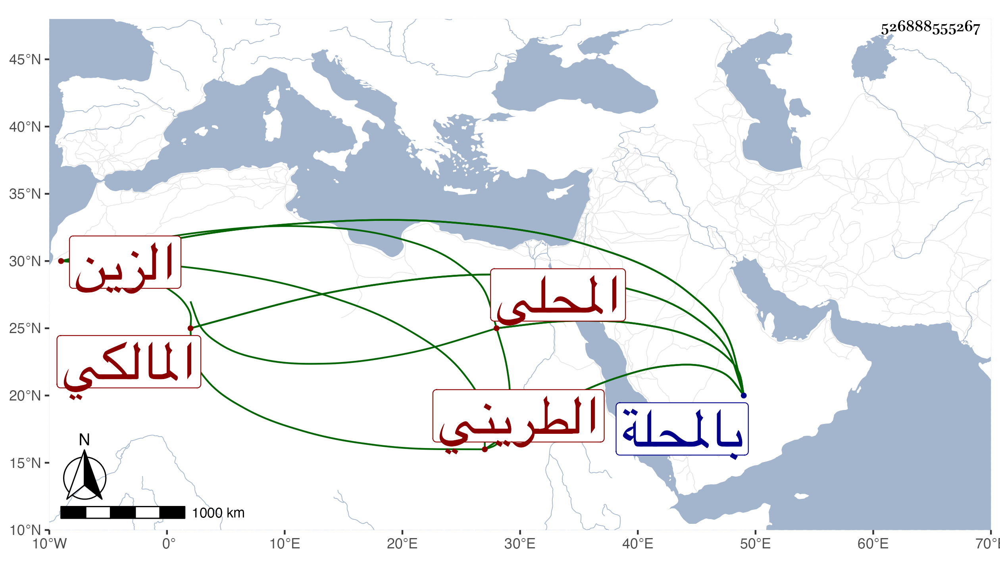

0902Sakhawi.DawLamic.ITO20230111-ara1.EIS1600.526888555267
Biography ID: 526888555267
171
أبو بكر بن عمر بن محمد الزين المحلى الطريني المالكي الماضي أخوه محمد وأبوهما . نشأ بالمحلة وحفظ القرآن وكتبا وتفقه بأبيه وغيره وتسلك وصار المشار إليه بتلك النواحي علما ودينا وورعا وزهدا وصلاحا ترك أكل اللحم قبل موته بأعوام حين حدث النهب والإغارة على البهائم ونحوها تورعا بل كان لا يقبل من أحد شيئا البتة وقنع بما يقيم به أوده من زريعة مع مزيد الاقتصاد في قوته وملبسه حتى لعله مات من قلة الغذاء وكثرة الصوم والعبادة ومزيد إعراضه عن الدنيا والتفاته إلى الآخرة من طلب العلم والعبادة وإكثاره من زيارة كل من أحمد البدوي وعمر بن عيسى السمنودي ماشيا وأحواله مشهورة مأثورة ولو قبل من الناس عطاياهم لكنز ما لا يوصف . ذكره شيخنا في أنبائه فقال الطريني ثم المحلى الشيخ الفاضل المعتقد زين الدين كان صالحا ورعا حسن المعرفة بالفقه على مذهب مالك قائما في نصر الحق وله أتباع وصيت كبير وأخره في حادي عشر ذي الحجة . والمقريزي في عقوده فيها ليلة الجمعة والصحيح أنه مات يوم النحر سنة سبع وعشرين بالمحلة عن أزيد من ستين سنة قال المقريزي وكانت شفاعاته لا ترد وكتب بخطه المليح عدة كتب وكان يتمثل كثيرا
| وما حملوني الضيم إلا حملته | لأني محب والمحب حمول |
وكذا بقول القائل
| لي سادة من عزهم | إقدامهم فوق الجباه |
| إن لم أكن منهم فلي | في ذكرهم عز وجاه |
رحمه الله ونفعنا به .
